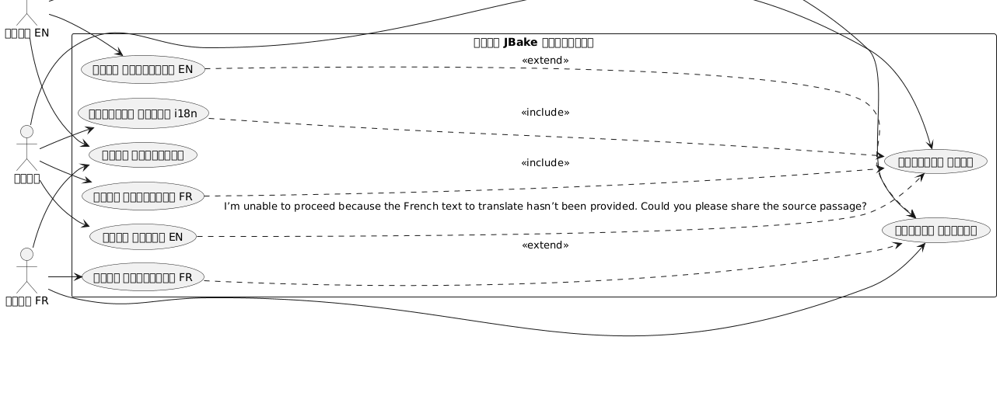
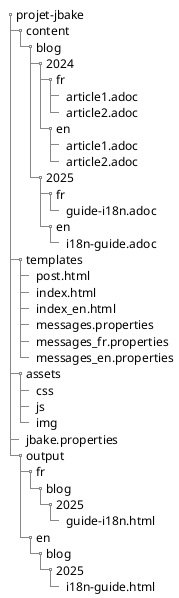
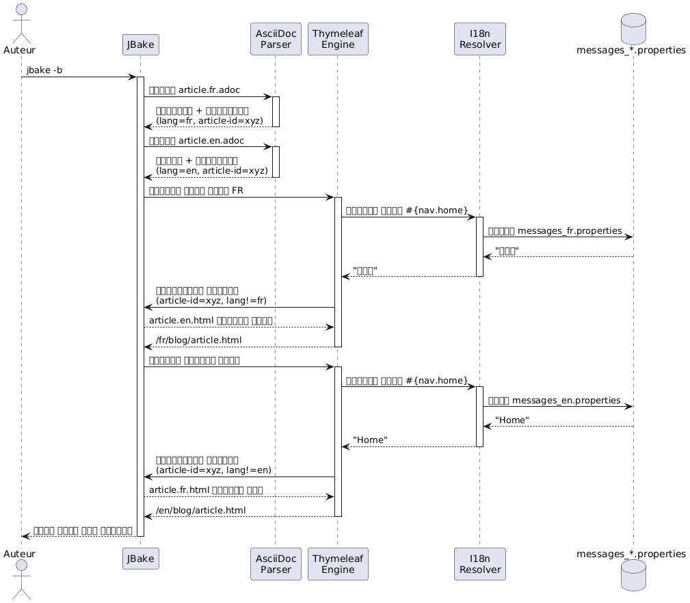
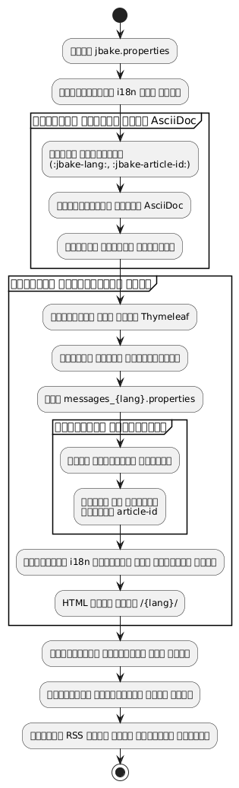
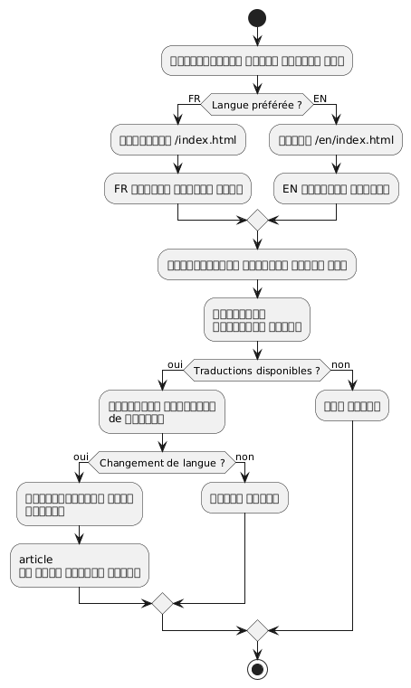
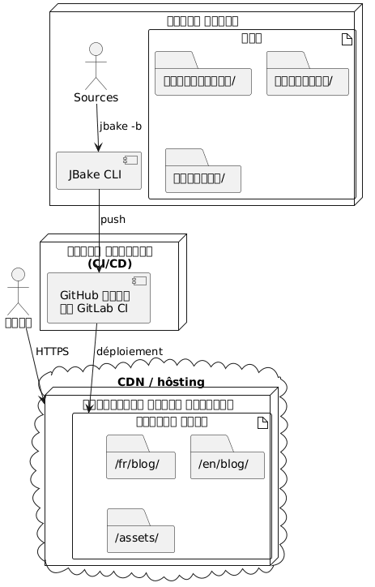

Thymeleaf দিয়ে JBake স্ট্যাটিক সাইটের আন্তর্জাতীকরণ
প্রকাশিত: 20 October 2025
ভূমিকা
একটি স্ট্যাটিক সাইটের আন্তর্জাতিকরণ (i18n) প্রথমে দেখতে জটিল মনে হতে পারে, কিন্তু JBake Thymeleaf-কে সম্মিলিত করলে বহুভাষিক সাইট তৈরি করার জন্য সুন্দর সমাধান প্রদান করে। এই প্রবন্ধে আমি দেখাবো কিভাবে আমি আমার ব্লগে i18n প্রয়োগ করেছি, টেমপ্লেটিং এবং একাধিক ভাষায় পোস্ট পরিচালনার উবয aspectos কভার করে।
ব্যবাহারের ক্ষেত্রের ডায়াগ্রাম (Use Case)

আন্তর্জাতিকীকরণ আর্কিটেকচার
আমাদের পদ্ধতি দুটি স্তম্ভের ভিত্তিতে আধারিত :
-
টেমপ্লেটিংের i18nThymeleaf বার্তা ফাইলের ব্যবহার UI উপাদানগুলির জন্য
-
বিষয়বস্তুর i18nভাষা অনুযায়ী নিবন্ধগুলোকে বিশেষ ফোল্ডার গঠনে সংগঠিত করা
স্ট্র্যাকচার চিত্র (ফাইল সংগঠন)

এই পদ্ধতি কেন?
এ পৃথকীকরণটি অনুমতি দেয়:
-
কোনো ভাষা হোক না কেন, ইন্টারফেসে সামঞ্জস্য বজায় রাখুন
-
নিবন্ধের বিষয়বস্তু ও অনুবাদের স্বতন্ত্রভাবে পরিচালনা করুন
-
বড় রিফ্যাক্টরিং ছাড়াই নতুন ভাষা যোগকে সহজ করা
-
নির্ধারিত ভাষায় কেবল উপলব্ধ দিক্তবই অনুমোদন করা
কম্পোনেন্ট ডায়াগ্রাম
Failed to generate image: PlantUML preprocessing failed: [From <input> (line 5) ]
@startuml
skinparam componentStyle rectangle
package "" {
folder "content/blog/2025/" {
^^^^^
Syntax Error? (Assumed diagram type: activity)
@startuml
skinparam componentStyle rectangle
package "" {
folder "content/blog/2025/" {
folder "fr/" as content_fr {
[article1.adoc]
[article2.adoc]
}
folder "en/" as content_en {
[article1.adoc] as article1_en
[article2.adoc] as article2_en
}
}
folder "templates/" {
[post.html]
[index.html]
[index_en.html]
}
folder "messages/" {
[messages_fr.properties]
[messages_en.properties]
}
[jbake.properties]
}
package "JBake ইঞ্জিন" {
[Parser AsciiDoc] as parser
[Template Engine\nThymeleaf] as thymeleaf
[Generator] as generator
[I18n Resolver] as i18n
}
package "সাইট তৈরি করা হয়েছে" {
folder "fr/" {
folder "blog/2025/" as blog_fr {
[article1.html]
[article2.html]
}
}
folder "en/" {
folder "blog/2025/" as blog_en {
[article1.html] as article1_html_en
[article2.html] as article2_html_en
}
}
}
content_fr --> parser
content_en --> parser
parser --> generator
templates --> thymeleaf
messages --> i18n
i18n --> thymeleaf
thymeleaf --> generator
jbake.properties --> generator
generator --> blog_fr
generator --> blog_en
@enduml
Thymeleaf-এর সাথে টেমপ্লেটিংয়ের I18n
মেসেজ ফাইলের গঠন
প্রথম ধাপ হলো প্রতিটি সমর্থিত ভাষার জন্য গুণধর্ম ফাইল তৈরি করা:
src/jbake/templates/
├── messages.properties # Fallback par défaut
├── messages_fr.properties # Français
├── messages_en.properties # Anglais
└── messages_de.properties # Allemandবার্তা ফাইলের বিষয়বস্তু
এখানে একটি ফাইলের উদাহরণ`messages_fr.properties`:
# Navigation
nav.home=Accueil
nav.blog=Blog
nav.about=À propos
nav.contact=Contact
# Articles
article.readmore=Lire la suite
article.published=Publié le
article.tags=Étiquettes
article.also.available=Également disponible en
# Interface
site.title=Mon Blog Technique
site.description=Partage de connaissances et expériences
footer.copyright=© 2025 Tous droits réservés
search.placeholder=Rechercher un article...এবং তার ইংরেজি সমতুল্য`messages_en.properties`:
# Navigation
nav.home=Home
nav.blog=Blog
nav.about=About
nav.contact=Contact
# Articles
article.readmore=Read more
article.published=Published on
article.tags=Tags
article.also.available=Also available in
# Interface
site.title=My Tech Blog
site.description=Sharing knowledge and experiences
footer.copyright=© 2025 All rights reserved
search.placeholder=Search articles...টেমপ্লেটে ব্যবহার
আপনার Thymeleaf টেমপ্লেটগুলে, সিনট্যাক্স ব্যবহার করুন`#{}`বার্তাগুলো অ্যাক্সেস করতে :
<!DOCTYPE html>
<html xmlns:th="http://www.thymeleaf.org">
<head>
<title th:text="#{site.title}">Mon Blog</title>
<meta name="description" th:content="#{site.description}" />
</head>
<body>
<nav>
<a th:href="@{/}" th:text="#{nav.home}">Accueil</a>
<a th:href="@{/blog/}" th:text="#{nav.blog}">Blog</a>
<a th:href="@{/about.html}" th:text="#{nav.about}">À propos</a>
</nav>
<footer>
<p th:text="#{footer.copyright}">Copyright</p>
</footer>
</body>
</html>অনুক্রমিক ডায়াগ্রাম - i18n সমাধান

JBake-এ লোকেল কনফিগারেশন
আপনার ফাইলে`jbake.properties`, ডিফল্ট লোকেল সেট করুন :
# Locale par défaut
thymeleaf.locale=fr
# Encodage
template.encoding=UTF-8I18n নিবন্ধগুলো : ফোল্ডার অনুযায়ী সংগঠন
প্রবাহ চিত্র (Flow) - জেনারেশন

ফোল্ডারের গঠন
ফাইলের নামে সাফিক্সের ব্যবহার পরিবর্তে, আমি আরও স্পষ্টতা ও রক্ষণাবেক্ষণের সুবিধা প্রদান করে এমন একটি ফোল্ডার ভিত্তিক সংগঠন বেছে নিয়েছিলাম:
content/blog/
├── 2024/
│ ├── fr/
│ │ ├── introduction-jbake.adoc
│ │ ├── guide-thymeleaf.adoc
│ │ └── astuces-asciidoc.adoc
│ └── en/
│ ├── introduction-jbake.adoc
│ ├── thymeleaf-guide.adoc
│ └── asciidoc-tips.adoc
└── 2025/
├── fr/
│ └── internationalisation-jbake.adoc
└── en/
└── jbake-internationalization.adocএই পদ্ধতির সুবিধা
এই কাঠামোর چندین সুবিধা রয়েছে:
-
স্পষ্ট বিছেদ: প্রতিটি ভাষার নিজস্ব স্থান আছে
-
ফ্লেক্সিবল নামকরণফাইলগুলো ভাষা অনুযায়ী ভিন্ন নাম রাখতে পারে।
-
স্কেলেবিলিটিনতুন ভাষা যোগ করা সহজ
-
স্বাভাবিক সংগঠনJBake- এর সময়গত যুক্তি অনুসরণ করে
মেটাডেটা অনুচ্ছेदের
প্রতিটি নিবন্ধে অনুবাদদের মধ্যে সংযোগ করার জন্য মেটাডেটা অন্তর্ভুক্ত থাকতে হবে। এখানে একটি উদাহরণ আছে:
ফরাসি সংস্করণ(2025/fr/internationalisation-jbake.adoc) :
= Internationalisation d'un site statique JBake
:jbake-type: post
:jbake-status: published
:jbake-date: 2025-10-20
:jbake-lang: bn
:jbake-article-id: jbake-i18n-thymeleaf
:jbake-tags: jbake, thymeleaf, i18n
:jbake-description: Guide pour mettre en place l'i18n avec JBakeইংরেজি সংস্করণ(2025/en/jbake-internationalization.adoc) :
= Internationalizing a JBake Static Site
:jbake-type: post
:jbake-status: published
:jbake-date: 2025-10-20
:jbake-lang: bn
:jbake-article-id: jbake-i18n-thymeleaf
:jbake-tags: jbake, thymeleaf, i18n
:jbake-description: Guide to implement i18n with JBakeঅ্যাট্রিবিউট`:jbake-article-id:`গুরুত্বপূর্ণ : এর বিভিন্ন অনুবাদগুলোকে একত্রিত করার অনুমতি দেয়।
URL কনফিগারেশন
মধ্যে`jbake.properties`, ভাষা شامل করার জন্য ইউআরএল প্যাটার্ন কনফিগার করুণ:
# Pattern d'URL avec langue
post.permalink.pattern=:lang/blog/:year/:name.html
# Langue par défaut
site.default.lang=frএটি এই ধরণের URL তৈরি করবে :
-
/fr/blog/2025/internationalisation-jbake.html -
/en/blog/2025/jbake-internationalization.html
বহুভাষিক প্রদর্শনের জন্য টেমপ্লেট
ভাষা seçimকার সহ আর্টিকেল টেমপ্লেট
একটি টেমপ্লেট তৈরি করুন`post.html`উপলব্ধ অনুবাদগুলোকে দেখায় :
<!DOCTYPE html>
<html xmlns:th="http://www.thymeleaf.org">
<head>
<title th:text="${content.title}">Article</title>
</head>
<body>
<article>
<header>
<h1 th:text="${content.title}">Titre</h1>
<div class="article-meta">
<time th:text="${#dates.format(content.date, 'dd MMMM yyyy')}"
th:attr="datetime=${#dates.format(content.date, 'yyyy-MM-dd')}">
Date
</time>
<!-- Sélecteur de traductions -->
<div class="translations" th:if="${content['article-id']}">
<span th:text="#{article.also.available}">Aussi disponible en :</span>
<ul class="language-list">
<li th:each="post : ${published_posts}"
th:if="${post['article-id'] == content['article-id'] and post.lang != content.lang}">
<a th:href="${post.uri}"
th:text="${post.lang.toUpperCase()}">
LANG
</a>
</li>
</ul>
</div>
</div>
</header>
<div class="content" th:utext="${content.body}">
Contenu de l'article
</div>
<footer class="article-footer">
<div class="tags" th:if="${content.tags}">
<span th:text="#{article.tags}">Étiquettes :</span>
<span th:each="tag : ${content.tags}">
<a th:href="@{/tags/{tag}.html(tag=${tag})}"
th:text="${tag}">tag</a>
</span>
</div>
</footer>
</article>
</body>
</html>ভাষারためにフィルターされたインデックス
প্রতিটি ভাষার জন্য ইন্ডেক্স টেমপ্লেট তৈরি করুন:
index.html(index ফরাসি) :
<!DOCTYPE html>
<html xmlns:th="http://www.thymeleaf.org">
<head>
<title th:text="#{site.title}">Mon Blog</title>
</head>
<body>
<main>
<h1 th:text="#{nav.blog}">Blog</h1>
<div class="articles-list">
<article th:each="post : ${published_posts}"
th:if="${post.lang == 'fr'}">
<h2>
<a th:href="${post.uri}" th:text="${post.title}">Titre</a>
</h2>
<time th:text="${#dates.format(post.date, 'dd MMMM yyyy')}">
Date
</time>
<p th:text="${post.description}">Description</p>
<a th:href="${post.uri}" th:text="#{article.readmore}">
Lire la suite
</a>
</article>
</div>
</main>
</body>
</html>index_en.html(ইঙ্গরেজি ইন্ডেক্স) :
<!DOCTYPE html>
<html xmlns:th="http://www.thymeleaf.org">
<head>
<title th:text="#{site.title}">My Blog</title>
</head>
<body>
<main>
<h1 th:text="#{nav.blog}">Blog</h1>
<div class="articles-list">
<article th:each="post : ${published_posts}"
th:if="${post.lang == 'en'}">
<h2>
<a th:href="${post.uri}" th:text="${post.title}">Title</a>
</h2>
<time th:text="${#dates.format(post.date, 'dd MMMM yyyy')}">
Date
</time>
<p th:text="${post.description}">Description</p>
<a th:href="${post.uri}" th:text="#{article.readmore}">
Read more
</a>
</article>
</div>
</main>
</body>
</html>ভাষাগুলোর মধ্যে নেভিগেশন
বিশ্ব ভাষা নির্বাচক
প্রবাহ চিত্র - ব্যাবহারকারী পঠন

আপনার প্রধান টেমপ্লেটে একটি ভাষা নির্বাচক যোগ করুন:
<nav class="language-switcher">
<a href="/index.html"
th:classappend="${content.lang == 'fr'} ? 'active'"
title="Français">
🇫🇷 FR
</a>
<a href="/en/index.html"
th:classappend="${content.lang == 'en'} ? 'active'"
title="English">
🇬🇧 EN
</a>
</nav>সিলেক্টরের জন্য CSS স্টাইল
.language-switcher {
display: flex;
gap: 1rem;
padding: 0.5rem;
background: #f5f5f5;
border-radius: 4px;
}
.language-switcher a {
padding: 0.5rem 1rem;
text-decoration: none;
color: #333;
border-radius: 4px;
transition: background 0.2s;
}
.language-switcher a:hover {
background: #e0e0e0;
}
.language-switcher a.active {
background: #007bff;
color: white;
}
.translations {
margin: 1rem 0;
padding: 1rem;
background: #f8f9fa;
border-left: 4px solid #007bff;
}
.language-list {
display: inline-flex;
gap: 0.5rem;
list-style: none;
padding: 0;
margin: 0;
}
.language-list li::after {
content: "•";
margin-left: 0.5rem;
}
.language-list li:last-child::after {
content: "";
}ভাষা অনুযায়ী RSS ফিড
ভাষা অনুযায়ী পৃথক RSS ফিডের জন্য, পৃথক টেম্পলেট তৈরি করুন :
feed.xml(ফ্রাঙ্কসীয় প্রবাহ) :
<?xml version="1.0" encoding="UTF-8"?>
<rss version="2.0" xmlns:th="http://www.thymeleaf.org">
<channel>
<title th:text="#{site.title}">Mon Blog</title>
<link th:text="${config.site_host}">http://example.com</link>
<description th:text="#{site.description}">Description</description>
<language>fr</language>
<item th:each="post : ${published_posts}"
th:if="${post.lang == 'fr'}">
<title th:text="${post.title}">Titre</title>
<link th:text="${config.site_host + post.uri}">Lien</link>
<pubDate th:text="${#dates.format(post.date, 'EEE, dd MMM yyyy HH:mm:ss Z')}">
Date
</pubDate>
<description th:text="${post.description}">Description</description>
</item>
</channel>
</rss>ভালো অভ্যাস এবং টিপস
আর্টিকেল আইডির সামঞ্জস্য
Assurez-vous que `:jbake-article-id:`একই নিবন্ধের সমस्त অনুবাদে একই হয়। একগত ফরম্যাট ব্যবহার করুন :
-
বিশ্বব্যাপীতার জন্য ইংরেজি শনাক্তকারী প্রাধান্য দিন
-
শব্দগুলোকে আলাদা করতে হাইফেন ব্যবহার করুন
-
বিশেষ অক্ষর এড়িয়ে চলুন
2. সংগত তারিখ
একটি নিবন্ধের সমস্ত অনুবাদের একই প্রকাশ তারিখ হওয়া উচিত।:jbake-date:) "এটি শ্রেণীবিন্যাস ও সময়ানুক্রমিক প্রদর্শনকে সহজ করে।
3. বহুভাষিক ট্যাগ
ট্যাগগুলির জন্য, আপনার দুটি विकল্প আছে :
বিকল্প ১ : ইংরেজি সর্বজনীন ট্যাগ
:jbake-tags: java, spring-boot, microservicesবিকল্প ২: ট্যাগগুলো মানচিত্রের মাধ্যমে অনুবাদিত
# Version française
:jbake-tags: java, spring-boot, microservices
# Version anglaise
:jbake-tags: java, spring-boot, microservices৪. অনুবাদ না হওয়া বিষয়들의 ব্যবস্থাপনা
সকল পাতা অনুবাদ করা বাধ্যতামূলক নয়। যদি কোনো পাতা শুধুমাত্র এক ভাষায় থাকলেই, তবে তা অন্য ভাষার তালিকায় সহজে দেখা যাবে না।
5. সাইটম্যাপ বহুভাষিক
সব ভাষা অন্তর্ভুক্ত করতে একটি সাইটম্যাপ তৈরি করুন :
<?xml version="1.0" encoding="UTF-8"?>
<urlset xmlns="http://www.sitemaps.org/schemas/sitemap/0.9"
xmlns:xhtml="http://www.w3.org/1999/xhtml"
xmlns:th="http://www.thymeleaf.org">
<url th:each="post : ${published_posts}">
<loc th:text="${config.site_host + post.uri}">URL</loc>
<lastmod th:text="${#dates.format(post.date, 'yyyy-MM-dd')}">Date</lastmod>
<!-- Liens alternatifs pour les traductions -->
<xhtml:link th:each="translation : ${published_posts}"
th:if="${translation['article-id'] == post['article-id'] and translation.lang != post.lang}"
rel="alternate"
th:attr="hreflang=${translation.lang},href=${config.site_host + translation.uri}" />
</url>
</urlset>উপসংহার
JBake সাইটের Thymeleaf‑এ আন্তর্জাতিকীকরণ একটি শক্তিশালী এবং রক্ষণযোগ্য পদ্ধতি। টেমপ্লেটিং থেকে i18n‑কে (বার্তা ফাইলগুলির melalui) পৃथক করে এবং কন্টেন্ট i18n‑কে (ফোল্ডার সংগঠনের মাধ্যমে) পৃথক করলে, আপনি একটি নমনীয় সিস্টেম পাবেন যা সহজে বিকাশ করা যায়।
মনে রাখতে গুরুত্বপূর্ণ বিষয়গুলো:
-
Thymeleaf বার্তা ফাইলগুলোব্যবহারকারী ін্টারফেসের জন্য
-
ফোল্ডারের অনুযায়ী সংগঠন(বছর/ভাষা) জন্য পবন্ধগুলো
-
লেখের শনাক্তকারীঅনুবাদগুলোকে যুক্ত করার জন্য
-
নির্দিষ্ট টেমপ্লেট pour chaque langue
-
URL স্পষ্টভাষা কোড অন্তর্ভুক্ত
প্রসারণ ডায়াগ্রাম

এই আর্কিটেকচার আপনাকে সহজে দুটি ভাষায় শুরু করতে দেয় এবং প্রধান রিফ্যাক্টরিং ছাড়াই অন্যান্য ভাষা যোগ করে দেওয়া যায়। সবকিছু সম্পূর্ণভাবে স্ট্যাটিক ও কর্মক্ষম, JBake দর্শরের সাথে নিষ্ঠাবদ্ধ permanece।
শুভ বহুভাষিক বিকাশ! 🌍